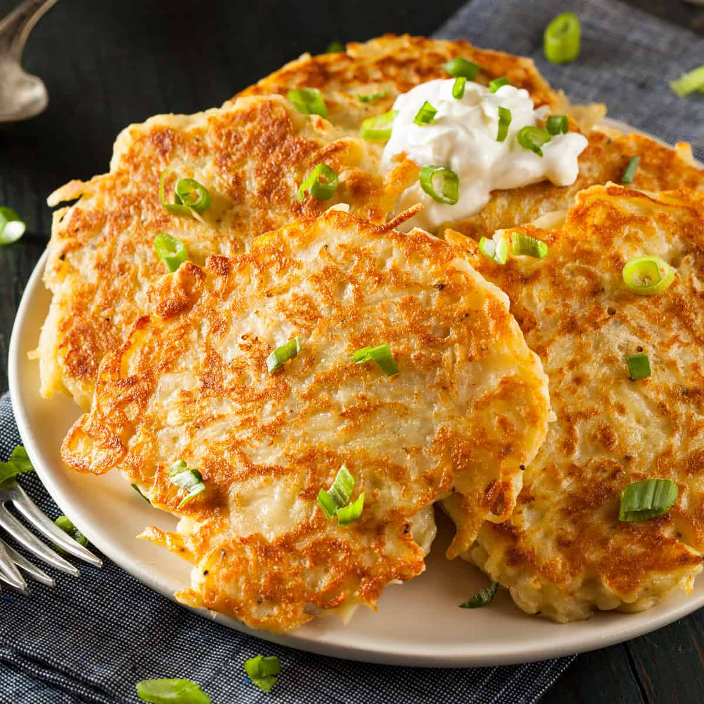

UK BREAKFASTS
La colazione è un pasto spesso sottovalutato in confronto al pranzo o alla cena.
Per iniziare la giornata con grinta e anche con il giusto apporto energetico, invece, la prima colazione è un pasto
fondamentale: ogni dieta sana prevede al suo interno un primo piatto della mattina, in grado di dare al tuo fisico le energie per iniziare la giornata con il piede giusto.
Non tutti però mangiano o bevono le stesse cose durante il rito del primo pasto quotidiano.
Se le differenze si possononotare già nella stessa Nazione, figuriamoci quelle tra i vari Paesi delmondo.
La colazione, infatti, si svolge in maniera diversa in ogni parte del pianeta.
Ogni località mette in tavola alimenti
differenti, alcuni dei quali ci possono sembrare pure molto strani o quantomeno parecchio dissimili da quelli che abitualmente consumiamo la mattina.
In quest'articolo faremo un viaggio nello United Kingdom, a scoprire cosa mangiano per colazione gli abitanti del Regno Unito.

REGNO UNITO
Nel piatto completo che costituisce la classica colazione inglese non devono mancare fagioli, salsiccia, bacon (pancetta fritta), uova, funghi, hash browns (frittelle di patate) e pane tostato.
Il tutto è accompagnato da una fumante tazza di tè, con l'aggiunta opzionale di black pudding, una specie di salsiccia fatta con sangue di maiale.

SCOZIA
La colazione in Scozia non può non contemplare il Porridge che è uno dei simboli della cucina nazionale: è una “polentina” di avena, che si mangia calda.
Le Aberdeen Rowies sono sfogliatine fatte con lo strutto ed il burro: si mangiano con burro e marmalade, la marmellata d’arance amare.
Una chicca sono infine i Baps, panini sofficissimi, dalla forma ovale e leggermente schiacciati, ripieni con un uovo fritto e ayrshire bacon (pancetta grigliata).

GALLES
Piatto centrale nella colazione Gallese sono le Welsh Cake (le torte gallesi) sono dei piccoli dolci tradizionali base di farina di burro o strutto, di uova, di zucchero, di ribes o di uvetta.
L’altro pezzo forte si chiama Laverbread ed è un preparato fatto con le alghe.
Già, le alghe del mare.Queste vengono cotte e poi mescolate con l’avena per formare una sorta di composto da poter usare sia come piatto principale che come companitico.

IRLANDA DEL NORD
La colazione Irlandese, chiamata Full Irish Breakfast già nel nome dà l’idea di essere un pasto completo e sostanzioso.
Non si discosta molto da quella Inglese, se non per l'aggiunta di alcuni piatti tipici.
Il Drisheen, un tipo di sanguinaccio insaccato prodotto in Irlanda, il Boxty, il tortino irlandese di patate ed il Bread, il pane irlandese, lievitato con il bicarbonato di soda.